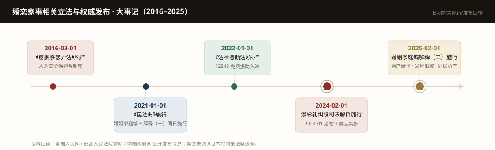
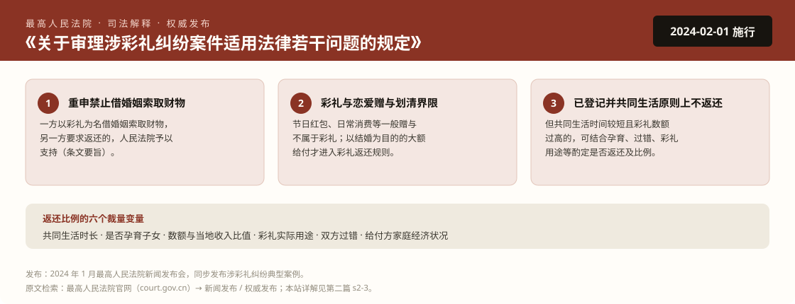
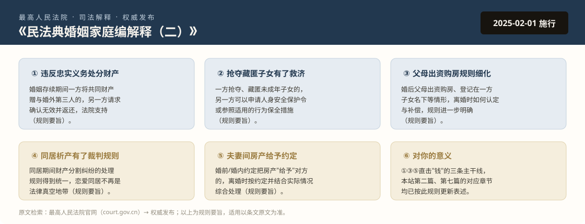
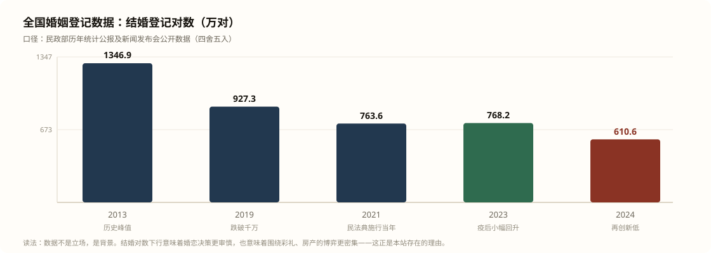

这一页在做什么
前七篇讲的是"规则是什么"，这一页讲的是"规则最近发生了什么"。婚恋家事领域不是铁板一块——司法解释几乎每年都在动，典型案例每个季度都在发，统计数据每月都在更新。看懂一门法律的人，和盯得住它最近动向的人，拿到的是两种结果。
这一页做三件事：
- 把官方发布按时间排成一条线：哪年哪个机构发布了什么、什么时候生效、跟你的钱包和身体有什么关系；
- 把最重要的两份文件做成海报卡：2024 年涉彩礼新规、2025 年婚姻家庭编解释（二）——这两份文件直接改写了本站第二篇的核心规则；
- 给你自己盯住官方发布的方法：与其收藏二手解读，不如学会一手检索。
本页所有日期与内容均来自全国人大网、中国政府网、最高人民法院官网、民政部官网的公开发布信息，条文与规则一律标注"要旨"口径——引用请以原文为准。官方发布不设快照缓存，个别发布会的具体日期以官网新闻稿为准；本页如有出入，以官方渠道为准，这正是下面第六节教你自己盯住它们的原因。
大事记：十年间改变婚恋账本的权威发布

时间线里的五件事，每一件都直接改写了普通人的婚恋决策成本：
| 时间 | 发布机构 | 发布内容 | 对你的直接影响 |
|---|---|---|---|
| 2016-03-01 | 全国人大常委会 | 《反家庭暴力法》施行 | 人身安全保护令入法；家暴（不分性别）有了独立于离婚诉讼的救济通道 |
| 2021-01-01 | 全国人大 + 最高人民法院 | 《民法典》施行；婚姻家庭编司法解释（一）同日施行 | 离婚冷静期（1077 条）、家务劳动补偿（1088 条）、彩礼返还法定情形（解释一第 5 条）全部定型 |
| 2022-01-01 | 全国人大常委会 | 《法律援助法》施行 | 经济困难的维权者可申请免费律师；12348 从"热线"升级为法定制度 |
| 2024-01 / 2024-02-01 | 最高人民法院 | 发布《涉彩礼纠纷司法解释》并同步发布典型案例 | 彩礼返还规则细化，"高额彩礼"治理有了直接裁判依据（下节详解） |
| 2025-02-01 | 最高人民法院 | 《民法典婚姻家庭编司法解释（二）》施行 | 婚内赠与第三人财产可追回、抢夺藏匿子女可保全、同居析产有规则（再下节详解） |
司法解释不是法律，但全国法院必须执行——它的实际约束力约等于"规则本身"。典型案例不具有强制力，但代表最高裁判倾向，各地法院会参照。所以盯官方发布，盯这两类文件效率最高。
热点一：涉彩礼司法解释（2024）

这份文件是近十年婚恋领域最重要的规则变化之一。对普通男性的三个直接变化：
- "借婚姻索取财物"有了可操作的追回路径
以前彩礼纠纷只有解释（一）第五条的三种情形，边界之外全看裁判尺度；新规把"以彩礼为名索取财物"单独拉出来，给了明确的返还依据。父母被"儿子要结婚、不给就崩"式索要的大额财物，追回的规则基础更硬了。
- 恋爱赠与和彩礼被切开了
新规明确节日红包、日常消费等一般赠与不算彩礼。这对双方都是好事——它把"恋爱期间我给她花的钱全算彩礼"这种不切实际的期待砍掉了，也让真正的大额给付（订婚、三金、改口费）在诉讼中更容易被认定为彩礼。
- "登记+共同生活"不再是绝对挡箭牌
已登记结婚且共同生活的，离婚时原则上不返还彩礼；但共同生活时间较短且数额过高的，法院可以酌定返还。什么叫"较短"、什么叫"过高"，六个裁量变量（见海报）——这套变量体系让"闪婚闪离式的彩礼收割"难度陡增。
- 事实
- 双方登记结婚并短暂共同生活，男方家庭给付彩礼 18.6 万元（当地居民人均可支配收入的多倍），婚后数月因矛盾分居，男方诉请返还。
- 裁判要旨
- 法院未因"已登记结婚"直接驳回，而是结合共同生活时长、彩礼与当地收入的比值、是否孕育子女、双方过错综合酌定部分返还。这正是新规确立的裁量路径。
热点二：婚姻家庭编解释（二）（2025）

如果说 2024 年那份文件管的是"婚前的钱"，2025 年这份管的就是"婚内的钱和孩子"。三处与男性维权直接相关：
- 婚内赠与第三者的财产可以追回了（第①点）：此前这类案件各地裁判不一，新规统一为"违反忠实义务处分共同财产，另一方请求确认无效并返还的，法院支持"。注意适用对象是所有性别——丈夫被出轨、妻子给第三者转的钱，你同样有权追回；
- 抢夺藏匿孩子有了程序武器（第②点）：离婚拉锯中最无解的"把孩子藏起来"，从道德谴责升级为可申请行为保全的事项。这一条同样双向适用；
- 父母出资购房与夫妻间房产给予的规则被写细（第③⑤点）：本站第七篇"婚前必谈十二问"第三问（房）的答案空间，从此有了更明确的规则边界。
2024 把"彩礼"装进规则，2025 把"婚内财产与孩子"装进规则。两份文件加起来，本站反复强调的那句话有了制度背书：算账不是小气，规则本来就按算账的方式写的。
权威数据窗：大背景在怎么变

把这条趋势放在这里，不是贩卖焦虑，是解释两件事：
- 为什么婚恋博弈越来越"财务化"：结婚对数十年下行，意味着供给结构变了——部分地区婚龄人口性别比失衡叠加婚姻成本上升，围绕彩礼、房产、代际出资的谈判只会更密集。规则跟不上博弈密度时，纠纷就堆积在法院；
- 为什么官方在加速出规则：涉彩礼司法解释（2024）、解释（二）（2025）密集出台，正是对这十年数据变化的制度回应。看懂数据，你就能预判下一批规则会落在哪个领域。
引用任何"结婚率""离婚率"数据前先问三个问题：口径是登记对数还是结婚率？是初步数还是决算数？哪年发布的？二手自媒体最容易在这三处动手脚。
自己盯住官方发布：四个入口
| 入口 | 看什么 | 检索关键词 |
|---|---|---|
| 最高人民法院官网 court.gov.cn | 司法解释征求意见稿与正式稿、新闻发布会、典型案例、"司法大数据" | "涉彩礼""婚姻家庭编 解释""典型案例""新闻发布" |
| 中国政府网 / 全国人大网 gov.cn / npc.gov.cn | 法律全文与修改动态（民法典、反家暴法、法律援助法） | "民法典 婚姻家庭编""人身安全保护令" |
| 民政部官网 mca.gov.cn | 季度/年度婚姻登记统计、政策文件 | "婚姻登记数据""统计季报" |
| 中国法院网 / 各地高院 chinacourt.org | 裁判文书、白皮书、辖区典型案例 | "婚姻家事 白皮书""彩礼 返还" |
两个进阶动作：
- 盯征求意见稿：司法解释出台前会公开征求意见，那时你能看到规则的方向，提前半年到一年调整自己的决策（比如要不要加名、彩礼怎么谈）；
- 盯本省高院：婚恋家事的地方裁判尺度差异不小，你未来诉讼大概率就在本地法院。省高院的"审判白皮书"和"典型案例"比全国性文件更接近你将要遇到的现实。
社交媒体上的"新规解读"是这个领域谣言密度最高的板块——"净身出户""彩礼上限五万""登记即分房"之类的假规则常年流传。辨别方法只有一条：任何规则说法，去官网找得到原文才算数；找不到原文的，按谣言处理。
更新说明
本页为滚动维护页：大事记与数据将随官方新发布更新。最后核对时间 2026-11。本站正文（第二篇、第七篇）的规则表述已同步至 2025 年 2 月施行的最新司法解释口径。
规则在往"算清账、防收割"的方向走，但规则只保护拿着证据的人。官方发布给你方向，证据档案袋给你武器——两样都要有。